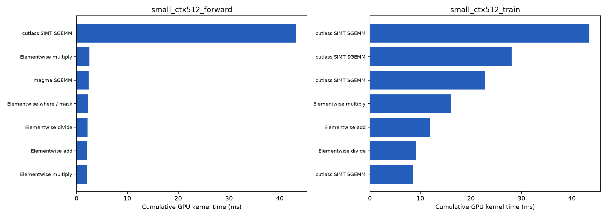

下表的GPU时间是kernel duration之和；wall是包含CPU调度及CUDA同步的单步耗时。矩阵乘占比根据实际kernel名中的gemm/gemv/cutlass/mma识别，属于名称归类，不是硬件FLOP计数。嵌套NVTX range会重复包含kernel，不应将全部range相加。
| 配置 | profile wall ms | 无profiler基线 ms | 全部kernel ms | 矩阵乘kernel时间占比 |
|---|---|---|---|---|
| large_ctx128_forward-backward_fp32_w5 | 361.65 | 356.08 | 316.19 | 79.8% |
| large_ctx128_forward_fp32_w5 | 120.75 | 127.41 | 96.47 | 91.6% |
| large_ctx256_forward_fp32_w5 | 218.31 | 223.82 | 205.58 | 88.4% |
| medium_ctx128_forward-backward_fp32_w5 | 162.65 | 167.69 | 121.23 | 76.7% |
| medium_ctx128_forward_fp32_w5 | 54.63 | 51.66 | 37.80 | 87.9% |
| medium_ctx128_train_fp32_w5 | 258.26 | — | 186.57 | 50.7% |
| medium_ctx256_forward-backward_fp32_w5 | 289.01 | 281.74 | 243.06 | 76.1% |
| medium_ctx256_forward_fp32_w5 | 91.09 | 99.30 | 78.26 | 85.3% |
| medium_ctx256_train_fp32_w5 | 367.30 | — | 308.98 | 60.5% |
| medium_ctx512_forward_fp32_w5 | 198.36 | 202.44 | 187.09 | 71.6% |
| small_ctx1024_forward-backward_fp32_w5 | 480.29 | 507.28 | 469.39 | 51.9% |
| small_ctx1024_forward_fp32_w5 | 176.08 | 170.30 | 169.95 | 59.6% |
| small_ctx128_forward-backward_fp32_w5 | 68.80 | 69.31 | 48.17 | 81.0% |
| small_ctx128_forward_fp32_w5 | 26.18 | 24.27 | 17.15 | 89.4% |
| small_ctx128_train_fp32_w5 | 105.03 | — | 69.28 | 61.3% |
| small_ctx256_forward-backward_fp32_w5 | 112.36 | 108.58 | 98.25 | 78.7% |
| small_ctx256_forward_fp32_w5 | 42.09 | 38.45 | 34.95 | 88.2% |
| small_ctx256_train_fp32_w5 | 159.48 | — | 119.38 | 65.1% |
| small_ctx512_forward-backward_fp32_w5 | 209.27 | 207.41 | 195.49 | 63.2% |
| small_ctx512_forward_fp32_w5 | 81.77 | 72.39 | 66.31 | 71.6% |
| small_ctx512_train_fp32_w5 | 243.80 | — | 213.63 | 57.9% |
| NVTX阶段 | 累计GPU kernel时间 ms | 最耗时kernel调用次数 | 最耗时kernel |
|---|---|---|---|
| attention_mask_softmax | 10.398 | 12 | void at::native::elementwise_kernel<(int)128, (int)2, void at::native::gpu_kernel_impl_nocast<at::native::<unnamed>::where_kernel_impl(at::TensorIterator &)::[lambda() (instance 1)]::operator ()() const::[lambda() (instance 11)]::operator ()() const::[lambda(bool, float, float) (instance 1)]>(at::TensorIteratorBase &, const T1 &)::[lambda(int) (instance 1)]>(int, T3) |
| attention_pv | 2.185 | 12 | void cutlass::Kernel2<cutlass_80_simt_sgemm_64x64_8x5_nn_align1>(T1::Params) |
| attention_qk | 4.419 | 12 | void magma_sgemmEx_kernel<float, float, float, (bool)1, (bool)0, (int)6, (int)4, (int)6, (int)3, (int)4>(int, int, int, Tensor, int, Tensor, int, Tensor, int, Tensor, int, int, int, const T1 *, const T1 *, T1, T1, int, cublasLtEpilogue_t, int, const void *, long) |
| forward | 66.315 | 85 | void cutlass::Kernel2<cutlass_80_simt_sgemm_256x128_8x4_tn_align1>(T1::Params) |
Attention 前向阶段：QK（含scale）4.419ms，mask/softmax 10.398ms，PV 2.185ms。这里只统计前向NVTX子阶段；反向kernel归入loss_backward。
| NVTX阶段 | 累计GPU kernel时间 ms | 最耗时kernel调用次数 | 最耗时kernel |
|---|---|---|---|
| 128.095 | 73 | void cutlass::Kernel2<cutlass_80_simt_sgemm_256x128_8x4_nn_align1>(T1::Params) | |
| attention_mask_softmax | 10.387 | 12 | void at::native::elementwise_kernel<(int)128, (int)2, void at::native::gpu_kernel_impl_nocast<at::native::<unnamed>::where_kernel_impl(at::TensorIterator &)::[lambda() (instance 1)]::operator ()() const::[lambda() (instance 11)]::operator ()() const::[lambda(bool, float, float) (instance 1)]>(at::TensorIteratorBase &, const T1 &)::[lambda(int) (instance 1)]>(int, T3) |
| attention_pv | 2.191 | 12 | void cutlass::Kernel2<cutlass_80_simt_sgemm_64x64_8x5_nn_align1>(T1::Params) |
| attention_qk | 4.423 | 12 | void magma_sgemmEx_kernel<float, float, float, (bool)1, (bool)0, (int)6, (int)4, (int)6, (int)3, (int)4>(int, int, int, Tensor, int, Tensor, int, Tensor, int, Tensor, int, int, int, const T1 *, const T1 *, T1, T1, int, cublasLtEpilogue_t, int, const void *, long) |
| forward | 66.628 | 85 | void cutlass::Kernel2<cutlass_80_simt_sgemm_256x128_8x4_tn_align1>(T1::Params) |
| loss_backward | 1.436 | 2 | void at::native::elementwise_kernel<(int)128, (int)2, void at::native::gpu_kernel_impl_nocast<at::native::CUDAFunctor_add<float>>(at::TensorIteratorBase &, const T1 &)::[lambda(int) (instance 1)]>(int, T3) |
| optimizer | 17.459 | 666 | void at::native::vectorized_elementwise_kernel<(int)4, at::native::AUnaryFunctor<float, float, float, at::native::binary_internal::MulFunctor<float>>, std::array<char *, (unsigned long)2>>(int, T2, T3) |
| CCCL:cub::DeviceRadixSort | 0.009 | 1 | void at_cuda_detail::cub::DeviceRadixSortSingleTileKernel<at_cuda_detail::cub::DeviceRadixSortPolicy<long, at::cuda::cub::detail::OpaqueType<(int)8>, unsigned long long>::Policy900, (bool)0, long, at::cuda::cub::detail::OpaqueType<(int)8>, unsigned long long, at_cuda_detail::cub::detail::identity_decomposer_t>(const T3 *, T3 *, const T4 *, T4 *, T5, int, int, T6) |
Attention 前向阶段：QK（含scale）4.423ms，mask/softmax 10.387ms，PV 2.191ms。这里只统计前向NVTX子阶段；反向kernel归入loss_backward。
small、batch4、seq512、12 heads、head_dim64：每层的两次Attention矩阵乘合计约3.22×10⁹ FLOPs，按softmax每元素约5次基础操作估算约6.29×10⁷次（指数/归约不等价于一条普通FLOP）；12层分别再乘12。softmax的算术量明显较少，但需要读写大矩阵并启动多个kernel，因此时间比例不会按FLOPs比例缩小。
优化建议：先用torch.compile检查这些elementwise/reduction操作能否融合，再实现FlashAttention减少分数矩阵物化、HBM读写和kernel启动。完整模型还包含投影与MLP的矩阵乘；必须同时报告算子加速与整模型加速。GPU kernel时间比例本身不是完整wall-clock速度提升的保证。